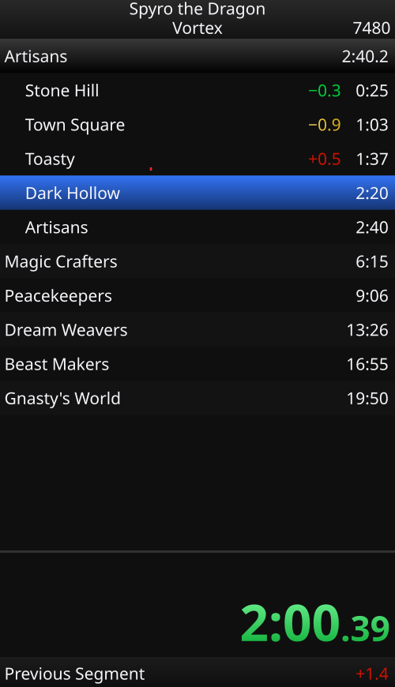

LiveSplit compatible
Import your LiveSplit settings, and open LiveSplit .lss splits and .lsl layouts directly.
GreenSplit is a feature rich, multi-platform speedrun timer written in C++ & Qt.
It is extremely customizable, and supports your LiveSplit splits & layouts natively.

Import your LiveSplit settings, and open LiveSplit .lss splits and .lsl layouts directly.
Works natively with anything that connects to a LiveSplit server.
Automatically uploads runs and keeps track of stats.
Customize layouts to your hearts desire with animations, text gradients, borders, label overrides, and much more!
Get a recap card after every finished run, showing you interesting information about the attempt! Integrates with speedrun.com
The first speedrun timer with split branches. Run a category where the level order can differ? Branches solve this problem.
Connects to OBS and Twitch, allowing you to create unique interactions through a robust scripting interface!
Make your splits background fully transparent. No more fiddling with annoying chroma keys.
Set a target time, and generate a theory comparison for it. Weight the splits yourself, or automatically weight splits by consistency.
Automatically show your discord friends what category you're currently running, and if you're ahead! or behind :(
Connect the GreenSplit discord bot to your server, to automatically recieve pings when runners you choose are on pace!
Have a feature idea that doesn't exist? Make a plugin for it! GreenSplit has a fully featured Python API, so you can easily extend its functionality.
Special thanks to LiveSplit for creating such a wonderful open source timer. LiveSplit has been a companion to so many speedrunners for years and years, and this project would not have been possible without the wonderful people who have contributed to it.